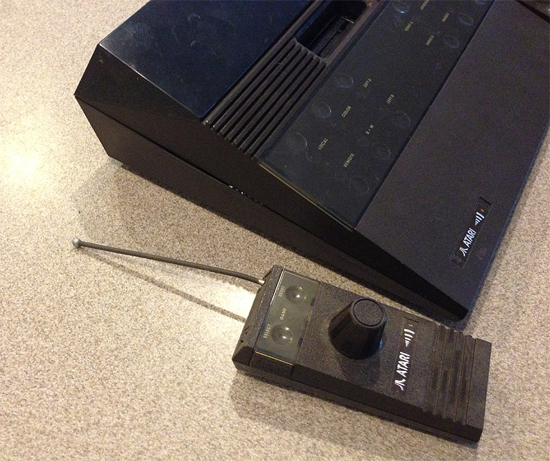

|
The Atari 2700
Wireless Video Computer
System
Atari
decided it was time to add some new bells and whistles to its Atari 2600
Video Computer System.
The new features would be a brand new
console system with a sleek new wedge look and the
newest feature of all...
they made it wireless.

The joysticks are simply amazing,
they fit in the palm of your hand fairly comfortably and the
most amazing
part about these new joysticks is the features built in.
The
joystick is a standard 8 position joystick, but it is also a 270 degree
paddle controller built into the same stalk!!!
The unit also
had select and reset buttons right on the joystick as well.
It makes me wonder why this joystick wasn't re-engineered back into a hardwired
version and used on the 5200, this was THE perfect joystick, far superior
to the current 5200
analog joystick in control, feel and features.

The Atari 2700 "RC Stella" case design was a radical change in direction
from the original Atari 2600 console case design.
The Atari
2700 and its unique controllers were designed by Roy Nishi former head
of Atari's Industrial Design group.
According to Roy Nishi,
the case design although sleek and high tech looking actually can be
traced
back to the primitive days of old glass tube radio receivers.
Apparently based on an old wedged shaped RCA radio receiver design Roy
created
a design trend which would follow into the Atari 3200, 5200, 2800,
7800 and even the Atari 2600jr consoles.
Giving Atari a unique
sleek sexy high-tech look to its gaming consoles.
 The
Atari 2700 joysticks were well crafted, sturdy and durable.
Their new look and feel would have made many a gamer very happy.
Many have wondered why Atari never released the Atari 2700.
The units were complete, boxes were manufactured, color dealer flyers were
sent out, it appears everything was ready. Apparently
during the Quality Assurance testing of the Atari 2700 RC Stella by John
Protsman, it turned out that the controllers emitted a signal within a
1000 foot radius. What this meant was the units would cause
havoc with other Atari 2700's nearby. Also the controller electronics
were based on the design of a garage door opener, so the controllers would
have the possibility of causing other remote controlled devices to operate.
The transmitter/receiver packs would require a complete redesign which
management deemed too costly and the project was shelved. However
a by-product of this venture may have turned out to be the large, bulky
wireless joysticks Atari sold that worked with the Atari 2600, 7800 and
its 8-bit computer line. The
Atari 2700 joysticks were well crafted, sturdy and durable.
Their new look and feel would have made many a gamer very happy.
Many have wondered why Atari never released the Atari 2700.
The units were complete, boxes were manufactured, color dealer flyers were
sent out, it appears everything was ready. Apparently
during the Quality Assurance testing of the Atari 2700 RC Stella by John
Protsman, it turned out that the controllers emitted a signal within a
1000 foot radius. What this meant was the units would cause
havoc with other Atari 2700's nearby. Also the controller electronics
were based on the design of a garage door opener, so the controllers would
have the possibility of causing other remote controlled devices to operate.
The transmitter/receiver packs would require a complete redesign which
management deemed too costly and the project was shelved. However
a by-product of this venture may have turned out to be the large, bulky
wireless joysticks Atari sold that worked with the Atari 2600, 7800 and
its 8-bit computer line.
 This
is an inside view of the 2700 Wireless joystick, the unit was powered by
a 9v battery and each joystick was preconfigured to work only as a left
or right joystick. One question does come to mind is, what
if 2 Atari 2700's were in close proximity to one another, the IC on the
motherboard does not appear to be of a type that would have had the ability
to have more then 1 unique identifier code, therefor it is most likely
that ALL 2700 wireless joysticks only had a unique LEFT or RIGHT identifier
code, but no unique code for each console/joystick pair. This
is an inside view of the 2700 Wireless joystick, the unit was powered by
a 9v battery and each joystick was preconfigured to work only as a left
or right joystick. One question does come to mind is, what
if 2 Atari 2700's were in close proximity to one another, the IC on the
motherboard does not appear to be of a type that would have had the ability
to have more then 1 unique identifier code, therefor it is most likely
that ALL 2700 wireless joysticks only had a unique LEFT or RIGHT identifier
code, but no unique code for each console/joystick pair.
1981
Atari 2700 Ad
|
{kind=link}